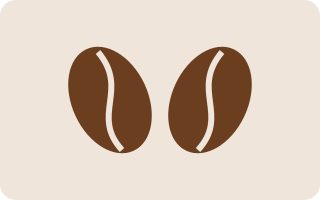

Fresh Specialty Coffee Roasted Weekly and Delivered to Your Office
Brewline roasts specialty beans on Monday and ships them to your office on Tuesday. Pick a roast, set your team size, and never run out again.
Start your free trial
How it works
- Tell us how many people drink coffee at your office.
- Choose light, medium or dark roasts, or let us rotate them.
- Get a fresh delivery every week. Pause or cancel any time.
Questions
Do you deliver outside the city?
Yes, anywhere in the country, with free shipping on weekly plans.
Can I change roasts?
Any time before Sunday night for the next delivery.